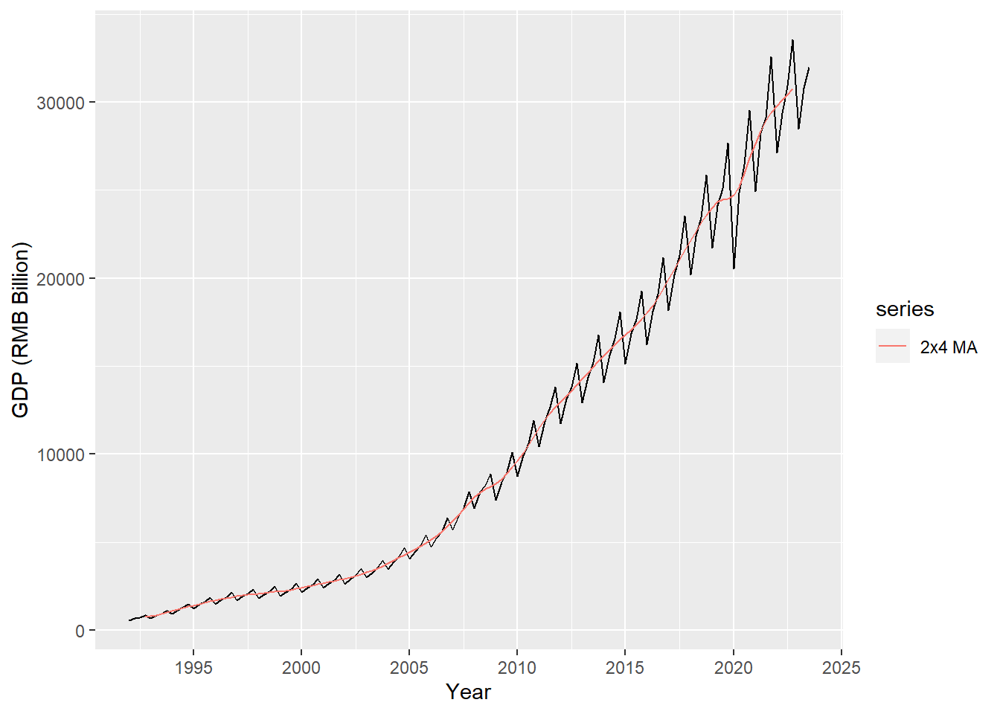
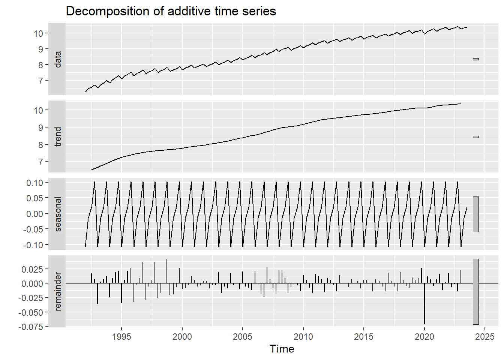

It is helpful to think about a time series as composed of different components: a trend component, a seasonal component, and a remainder.
\[x_t = T_t + S_t + R_t.\]
The formula assumes the “additive” composition. This assumption is appropriate if the magnitude of the fluctuations does not vary with the absolute levels of the time series. If the magnitude of fluctuations is proportional to the absolute levels, a “multiplicative” decomposition is more appropriate:
\[
x_t = T_t \times S_t \times R_t.
\]
Note that a multiplicative decomposition of a time series is equivalent to an additive decomposition on its log levels:
\[
\ln x_t = \ln T_t + \ln S_t + \ln R_t.
\]
Decomposing a time series allows us to extract information that is not obvious from the original time series. It also allows us to manipulate the time series. For example, if the seasonal component can be estimated, we can remove it to obtain seasonally-adjusted series, \(x_t^{SA} = x_t - S_t\), or \(x_t^{SA} = x_t/S_t\). The question is how to estimate the components given a time series.
2.2 Moving Averages
Moving averages turn out to be handy in estiming trend-cycles by averaging out noisy fluctuations. A moving average of order \(m\) (assuming \(m\) is an odd number) is defined as
Note that \(x_t\) is centered right in the middle and the average is symmetric. This also means, if we apply this formula to real data, the first and last observation will have to be discarded. If the order \(m\) is an even number, the formula will no longer be symmetric. To overcome this, we can estimate a moving average over another moving average. For example, we can estimate a moving average of order \(4\), followed by a moving average of order \(2\). This is denoted as \(2 \times 4\)-MA. Mathematically,
Note that how the \(2\times4\)-MA averages out the seasonality for time series with seasonal period \(4\), e.g. quarterly series. The formula puts equal weight on every quarter — the first and last terms refer the same quarter and their weights combined to \(\frac{1}{4}\).
In general, we can use \(m\)-MA to estimate the trend if the seasonal period is an odd number, and use \(2\times m\)-MA if the seasonal period is an even number.
library(zoo)library(ggplot2)library(forecast)data =read.csv.zoo("data/gdp.csv")gdp2x4MA =ma(ma(data$GDP, 4), 2)autoplot(data$GDP, series ="Data") +autolayer(gdp2x4MA, series ="2x4 MA") +labs(x ="Year", y ="GDP (RMB Billion)") +scale_x_continuous(breaks = pretty)

Figure 2.1: Quarterly GDP with 2x4-MA estimate of the trend-cycle
2.3 Classical Decomposition
Moving averages give us everything we need to perform classical decomposition. Classical decomposition, invented 1920s, is the simplest method decompose a time series into trend, seasonality and remainder. It is outdated nowadays and has been replaced by more advanced algorithms. Nonetheless, it serves as a good example for introductory purpose on how time series decomposition could possibly be achieved.
The algorithm for additive decomposition is as follows.
Estimate the trend component \(T_t\) by applying moving averages. If the seasonal period is an odd number, apply the \(m\)-th order MA. If the seasonal period is even, apply the \(2\times m\) MA.
Calculate the detrended series \(x_t - T_t\).
Calculate the seasonal component \(S_t\) by averaging all the detrended values of the season. For example, for quarterly series, the value of \(S_t\) for Q1 would be the average of all values in Q1. This assumes the seasonal component is constant over time. \(S_t\) is then adjusted to ensure all values summed up to zero.
Subtracting the seasonal component to get the remainder \(R_t = x_t-T_t-S_t\).
as.ts(log(data$GDP)) %>%decompose() %>%autoplot()

Figure 2.2: Classical multiplicative decomposition of quarterly GDP
The example performs additive decomposition to the logged quarterly GDP series. Note how the constant seasonal component is removed, leaving the smooth and nice-looking up-growing trend. The remainder component tells us the irregular ups and downs of the economy around the trend-cycle. Isn’t it amazing that a simple decomposition of the time series tells us a lot about the economy?
2.4 Seasonal Adjustment
By decomposing a time series into trend, seasonality and remainder, it readily gives us a method for seasonal adjustment. Simply substracting the seasonal component from the original data, or equivalently, summing up the trend and the remainder components, would give us the seasonally-adjusted series.
The following example compares the seasonally-adjusted series using the classical decomposition with the state-of-the-art X-13ARIMA-SEATS algorithm. Despite the former is far more rudimentary than the latter, they look quite close if we simply eye-balling the plot. By taking first-order differences, we can see the series based on classical decomposition is more volatile, suggesting the classical decomposition is less robust to unusual values.